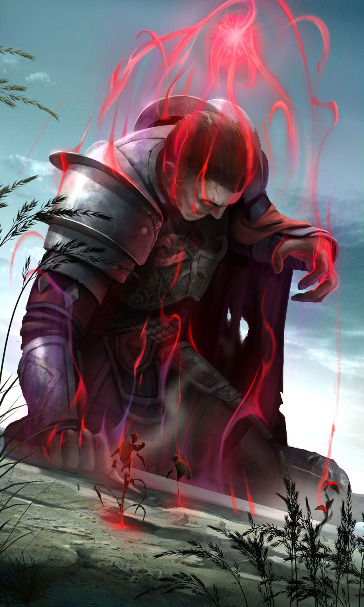

Магия крови значительно отличается от всех остальных школ магии. Основными ее особенностями являются:
- Ресурсом для произнесения в бою заклинаний Магии крови является не мана, а здоровье аватара
- Расход здоровья на произнесение любых заклинаний Магии крови складывается из трех частей: абсолютной, % части максимального здоровья аватара (МЗ) и % части текущего здоровья аватара (ТЗ). Первые две части расхода здоровья также снижают максимальный запас здоровья аватара до конца боя.
- Заклинания Магии крови не имеют требований к уровню аватара, интеллекту или какому-либо навыку
- Ударные заклинания Магии крови наносят магический урон, игнорируют часть сопротивления цели и полностью игнорируют щит сопротивления цели
- На заклинания Магии крови не действуют эффекты навыков Заклинатель, Призыватель, Разрушитель, Осквернитель и все способности рас и высших форм
- Сила заклинаний Магии крови зависит от уровня аватара
- Каждое произнесенное в бою заклинание Магии крови увеличивает стоимость произнесения всех последующих заклинаний Магии крови на 20% (от исходного значения) до конца боя
- За Магию крови не начисляется опыт в боях и не идет зачет в сражениях за обелиски хаоса
Для изучения Магии крови аватару необходимо совершить путешествие в Особняк вампиров, отыскать там Алтарь крови, расположенный на третьем этаже и, пожертвовав 3% от всего накопленного опыта, пройти особый ритуал. (с) Хелп
Как уже указано выше для получения уникальной механики аватару необходимо посетить 3 этаж особняка вампиров. собрать из букв расположенных в тупиках слово BLOOD после чего пожертвовав на алтаре 3 процента всего опыта аватара. для него откроется уникальная магия.
Система >> Аватар: Прикоснувшись к алтарю вы слышите голос, звучащий прямо в вашей голове – Готова ли ты пожертвовать тридцатую часть всех своих знаний и постичь тайну Магии крови Если да, то возложи руки на алтарь. для этого предлагаю воспользоваться картой с прохождением которую приложу ниже.
поход сложный. для сильного отряда, или очень сильных соло персонажей.
на 1 этаже вас встретят Полуночи +-60 уровня привраты 60+ и рыцари 50+
на 2 этаже вампиры лорды 80+ полуночи 60+ привраты 75+
на 3 этаже особняка вас встретят Кровавые патриархи 100+, Тени Смерти 90+, Тени забвения 90+ и Вампиры лорды 100+ с полуночами 100+
Система >> Аватар: Вы почувствовали как алтарь впитывает в себя ваш опыт и знания, а перед глазами в это время пронеслась череда странных символов и рисунков. Вскоре ритуал завершился и место потерянных знаний навсегда заняла Магия крови.”